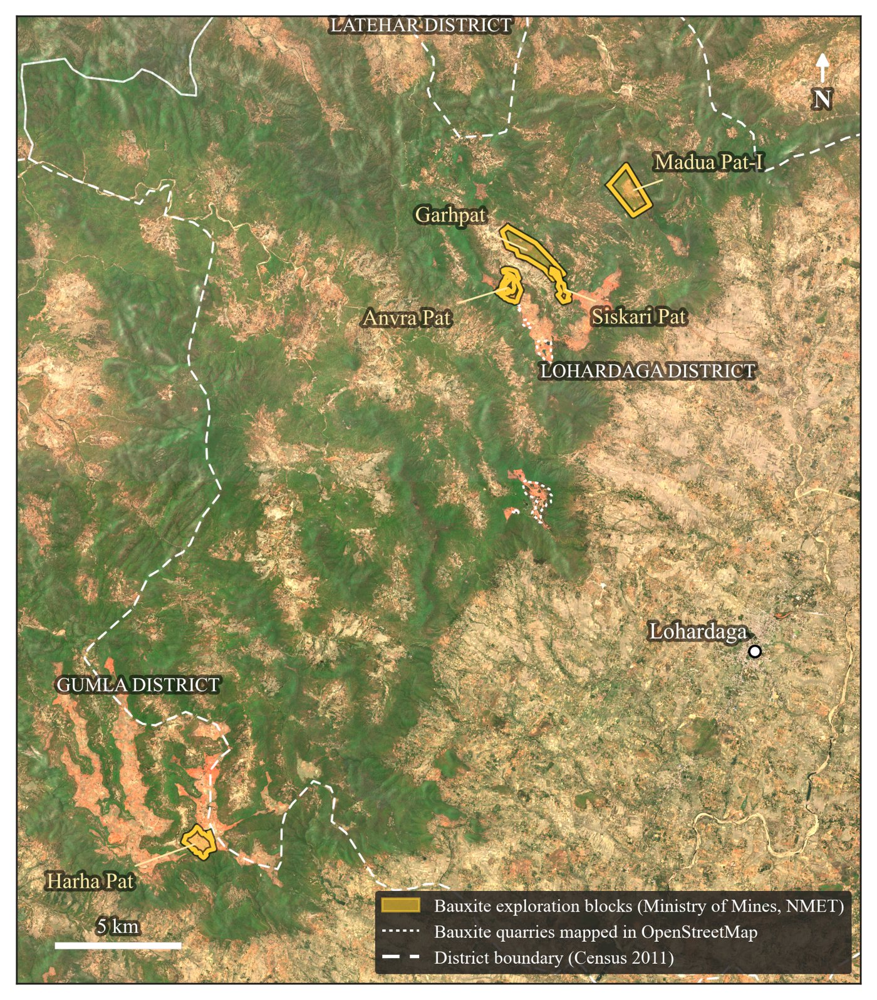
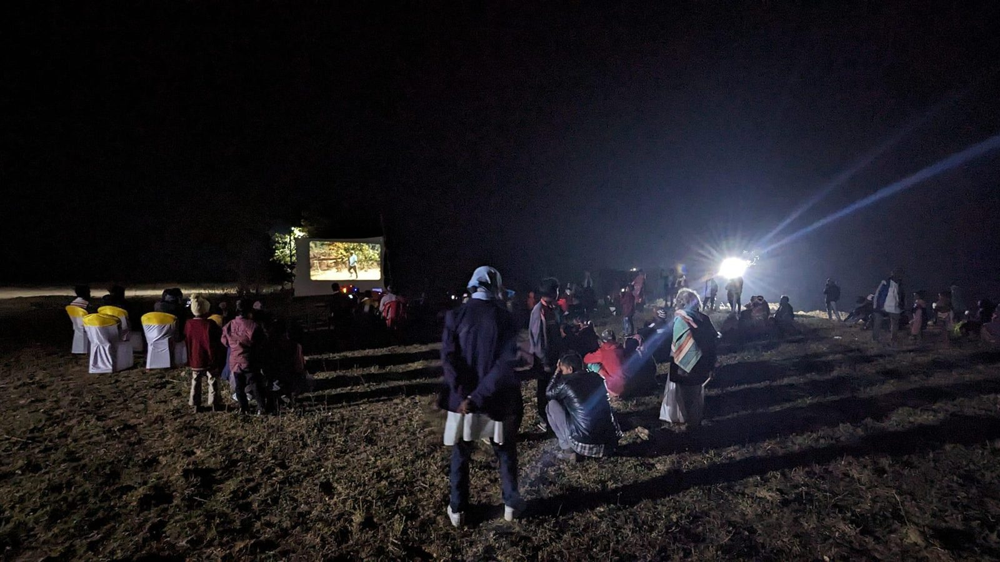

The Question
If the state maps Adivasi land in order to turn it into data — parcels to be listed, leased, and auctioned — how might a counter-map make Indigenous spatial knowledge visible without exposing it to the same gaze? This project began in Data and Society (DH 221) with Dr. Nour Joudah at UCLA in Winter 2026, as a methodological fork from my dissertation: a move from the cinematic frame to the spatial database, and from studying Adivasi media to imagining the infrastructure it might need.
What follows is a working account. One map is built from public, district-level data; the other is a sketch, labelled as one. The project deliberately stops short of a populated database of villages, groves, and boundaries, for reasons set out below.
Maps as Instruments
Maps are never neutral records; J. B. Harley called them exercises in power. On the Chotanagpur plateau that power has a long paper trail. The Permanent Settlement of 1793 tied land to revenue through intermediary landlords. In 1832 colonial officials demarcated the Damin-i-koh in the Rajmahal hills with masonry pillars, and the debt, moneylending, and land alienation that followed fed the Santal Hul of 1855. Later law recorded, and so protected, some customary tenures: the Chota Nagpur Tenancy Act of 1908 defines the Mundari khuntkatti right of those who first cleared the forest.
The datafication continues. In 2016 Jharkhand’s Revenue, Registration and Land Reforms Department built a Land Bank listing about 2.1 million acres of “government” land for investors. Nearly half of it was forest, and it took in gair-majarua village commons, sarna sacred groves, and khuntkatti land. The same plateau carries the industrial belt that Loha Garam Hai documents: by 2009–10 Odisha alone had 108 sponge iron plants, most of them in Sundargarh and Keonjhar, and Jharkhand about forty.
Seen from above, the same instruments look like this. On the Lohardaga plateau the Ministry of Mines has published five bauxite exploration blocks, proposed between 2021 and 2024 at the request of the state’s Department of Mines and Geology. At Madua Pat-I the exploration report counts 1.397 million tonnes of inferred bauxite, and, under “Demographic Data of the Block,” twenty-four families and 115 people whose only livelihood is farming. The satellite is built to see the first figure. The films on this page keep the second in view.

The Terrain the State Counts
A map built only from official, public figures, read against itself. Each district shows its Scheduled Tribe population (Census 2011) or its forest cover (Forest Survey of India, 2023); the outline marks districts that are Scheduled Areas under the Fifth Schedule. Click a district for its figures.
Click a district.
Read together, the layers show how the state’s own categories line up. Every one of the thirteen districts where Scheduled Tribes make up more than about a quarter of the population is fully a Scheduled Area, from Khunti (73 per cent) to Sahibganj (27 per cent); Godda, Garhwa, and Palamu are scheduled in part. The forest does not follow the same lines: Chatra and Hazaribagh are among the most forested districts in the state and are not Scheduled Areas at all.
Data: Census of India 2011, Primary Census Abstract; Forest Survey of India, India State of Forest Report 2023, Vol. II, Table 10.11.3; Ministry of Tribal Affairs, Statistical Profile of Scheduled Tribes in India (2013), list of Fifth Schedule Areas, citing the Scheduled Areas (State of Jharkhand) Order, 2007. Khunti was carved from Ranchi district, which is fully scheduled, after that Order. District boundaries: DataMeet, India – District Map (Census 2011), CC BY 2.5 India, simplified.
Counter-Mapping
Nancy Lee Peluso named the practice in 1995: communities taking up the state’s own cartographic tools to assert claims the official map erases. In India the Forest Rights Act of 2006 made a version of it legal procedure. To claim community forest resource rights, gram sabhas map their customary boundaries with elders and neighbouring villages, often with GPS. Counter-mapping can also be carved in stone. From 2017, villages in Khunti raised pathalgadi slabs at their entrances, drawing on the custom of memorial stones and inscribing them with Fifth Schedule provisions and claims of gram sabha self-rule. The state answered with cases naming more than ten thousand people for sedition; in December 2019 a new government decided to withdraw them.
Elsewhere, the practice has taken other forms: the Zuni map art project, where artists painted their homelands as story and relation rather than measured distance, and Irakli Sabekia’s Archive of Spatial Knowledge, a platform of censored narratives from the occupied regions of Georgia.
Montage
A sketch of the counter-map’s logic, not a map of any place: layers of seeing laid over one another. Switch them on and off.
A Digital Akhra
The akhra is the village gathering ground: a place of dance, song, and deliberation, held together as much by sound and rhythm as by any boundary. A spatial archive worthy of the name would have to keep that quality. It would draw on Nour Joudah’s idea of Indigenous duration — time as continuity and creative growth rather than a story of loss — and on Steven Feld’s acoustemology, knowing place through sound, while refusing what Dylan Robinson calls hungry listening. In such an archive a hard drive could work like a sasandiri, the Mundari memorial stone that marks a clan’s belonging to its land: evidence held by the community, not surrendered to a platform.
The practice already exists in film. With AKHRA in Ranchi, production moves in a cycle that I sketch from fieldwork as three phases:
- Sangharsh Struggle
Films made as evidence against displacement and pollution, such as Loha Garam Hai.
- Nirman Construction
Films that keep culture and memory, such as Naachi Se Baanchi.
- Pedagogy Teaching
Workshops that train the next generation of filmmakers, who return to the first phase.
Author’s elaboration from fieldwork at AKHRA, Ranchi.

Why District Level
The impulse to plot Indigenous knowledge onto a digital map can itself violate data sovereignty and expose communities to surveillance. So the only map here built from data stays at the scale of the district, using figures the state already publishes. No village, grove, burial ground, or boundary is located, and none will be without the community’s decision. The same commitments govern the archive’s First Principles, and they apply to this strand of Ways of Seeing as well.
Developed in DH 221 at UCLA and in papers for the CISA works-in-progress panel at UCLA, the Global Asia Conference at UC Irvine, and the Association for Asian Studies annual conference in Vancouver, 2026.
Sources
- Andersen, Peter B. 2022. The Santal Rebellion 1855–1856: The Call of Ṭhạkur. London: Routledge India. DOI
- Anusha, Chandana. 2023. “Making Individual Claims Under the Forest Rights Act, 2006: Clarifying and Defining Adivasi Lands.” Contributions to Indian Sociology 57 (3): 276–303. DOI
- Bhushan, Chandra, and Sugandh Juneja. 2011. Sponge Iron Industry: The Regulatory Challenge. New Delhi: Centre for Science and Environment. PDF
- Enote, Jim, and Jennifer McLerran, eds. 2011. A:shiwi A:wan Ulohnanne: The Zuni World. Zuni, NM: A:shiwi A:wan Museum and Heritage Center; Flagstaff: Museum of Northern Arizona.
- European Space Agency. 2025. Copernicus Sentinel-2C Level-2A tiles 45QTF and 45QTG, April 26, 2025. Registry of Open Data on AWS. Link
- Feld, Steven. 1996. “Waterfalls of Song: An Acoustemology of Place Resounding in Bosavi, Papua New Guinea.” In Senses of Place, edited by Steven Feld and Keith H. Basso, 91–135. Santa Fe: School of American Research Press.
- Forest Survey of India. 2024. India State of Forest Report 2023, Vol. II, Table 10.11.3. Link
- Guha, Ranajit. 1983. Elementary Aspects of Peasant Insurgency in Colonial India. Delhi: Oxford University Press.
- Harley, J. B. 1989. “Deconstructing the Map.” Cartographica 26 (2): 1–20. DOI
- Hassan, Mahmodul. 2024. “Jharkhand’s Controversial Land Bank Is Undermining Rights of Marginalised.” Maktoob Media, November 17. Link
- Joudah, Nour. 2022. “Mapping Decolonized Futures: Indigenous Visions for Palestine and Hawaiʻi.” PhD diss., University of California, Los Angeles. eScholarship
- Ministry of Tribal Affairs. 2013. Statistical Profile of Scheduled Tribes in India. New Delhi: Government of India. PDF
- National Mineral Exploration Trust. n.d. “Project Reports and Proposals.” Ministry of Mines, Government of India. Bauxite blocks in Gumla and Lohardaga, including CMPDI, Geological Report on Preliminary Exploration (G3) for Bauxite in Madua Pat-I Block (2023). Link
- Office of the Registrar General & Census Commissioner, India. 2011. Census of India 2011: Primary Census Abstract. Link
- OpenStreetMap contributors. 2026. Features tagged resource=bauxite, Lohardaga district. ODbL 1.0. Link
- Peluso, Nancy Lee. 1995. “Whose Woods Are These? Counter-Mapping Forest Territories in Kalimantan, Indonesia.” Antipode 27 (4): 383–406. DOI
- Robinson, Dylan. 2020. Hungry Listening: Resonant Theory for Indigenous Sound Studies. Minneapolis: University of Minnesota Press.
- Sabekia, Irakli. 2022. Archive of Spatial Knowledge. Link
- Scroll Staff. 2019. “Jharkhand: Hemant Soren-Led JMM Government Drops All Cases Filed Against Pathalgadi Supporters.” Scroll, December 29. Link
- Sharma, Supriya. 2019. “10,000 People Charged with Sedition in One Jharkhand District. What Does Democracy Mean Here?” Scroll, November 19. Link
- Sushmita. 2022. “Jharkhand: How the State Is Dispossessing Villagers of Their Forest Rights by Subverting Land Laws.” Scroll, July 26. Link
- Wood, Denis, with John Fels and John Krygier. 2010. Rethinking the Power of Maps. New York: Guilford Press.
- Zumbish, and Shuchita Jha. 2022. “Taking Ownership: How Forest-Dwellers in Chhattisgarh, Odisha Claimed Rights over Traditional Boundary.” Down To Earth, August 29. Link
District boundaries © DataMeet India community, CC BY 2.5 India. Map figures are the published district statistics of the Census of India and the Forest Survey of India.